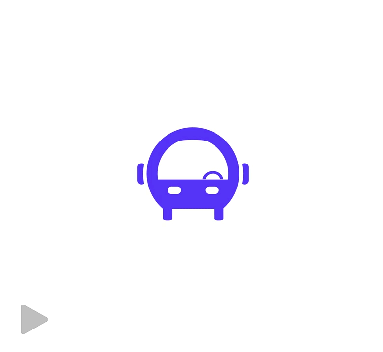

Animated Logo
I created the logo and this animation for Ontra. The animation uses the three main vehicle icons featured in Ontra's app, which I designed around the "O" in the logo to easily transition.

Work / Ontra Mobility · Branding
I'm the founding designer at Ontra Mobility, where I handle our branding, UX, and public-facing media.
I created the logo and this animation for Ontra. The animation uses the three main vehicle icons featured in Ontra's app, which I designed around the "O" in the logo to easily transition.
